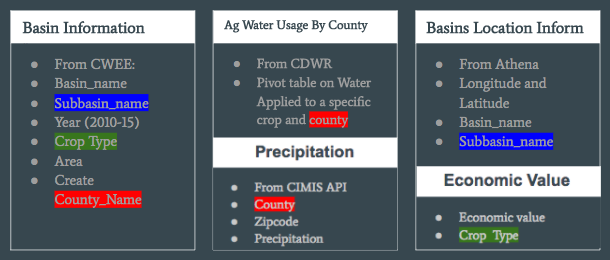

Crop Selection in San Joaquin Valley
UC Davis Winter 141B Group Project
Our topic is to analysis water uses of crops in San Joaquin Valley, California. Drought has stocked California for the past 6 years and it has been eased a little bit due to recent rain. However, the sever effect from drought are still influencing California. Last Month, NASAS published a report about lands in San Joaquin Valley are sinking into the grouped. Some areas sunk for more than a feet in a year. It is caused by the fact that too much ground water draw from the ground and most of those water goes into agriculture.
In the main time, about13% of US agriculture production came from San Joaquin Valley. It is a challenge to find the balance between reduces water uses in agriculture and keep the production of crops going.
We got help from UC Davis Water and energy efficiency center and try to investigate the appropriate crops to grow and the trends of changing in crops in the past 6 years. Potentially we want to help government’s and farmers` decision making and help them to decide the best crop to grow in terms of water usage.
Data Cleaning and Munging Before Analysis
We had our data from 5 resources, and we merged by common features across tables. For table that doesn’t have common features, we will creat feature which can be used to merge the other table. For example, in the Cropland Data Layer(CDL) excel, we created county name based on where subbasins are located, so that this table can be merged with Water Usage for crops by county. The highlighted feature in the table below are the common feature. We also webscrape precipation store in API format from the Internet ,and manmually sumamrize crop economic value from reading pdf’s from the website. Here is lists of our data sources.

- Basin Information The UC Davis Water and Energy Efficiency Center Processed this data into Excel Format. Contact us if you want to download the file
- Agriculture Water Usage By County
- Basin Location
- Zipcode and Precipetation
- Crop Economic Value
- Link to our iPython Notebook in Preprocesing Data
- Data Ready For Analysis
Data Analysis/Visulization
- Apttopriateness.
- The most Expensice crops.
-
Area Value Precipitation Trends This is a bar plot showing the trend for crop area, precipitation and crop economic value from 2010 to 2015. We standardized the value of area, economic value and precipitation and put them into a same bar plot graph. We can see that precipitation of San Joaquin valley dropped significantly since 2011 except year 2013. The crops area trends is consistent with precipitation and the crops area reaches its minimal in 2015. This fact proves that agriculture production is severely affected by the lack of rains. In the main time, the economic value of crops reaches its maximum in 2011 and starts to drop each year afterwards, and reaches the minimal value in 2015. Overall, we can see that agriculture production is severely affected by the lack of rains, and experiences an decrease in production from economics aspect.
-
Area trends for crops In this graph, we separate the crops by three tiers according to it`s water usage. Top 10% of crops in terms of water usage are named after high water usage crop. Bottom 40% of crops in terms of water usage are called low water usage crops. The rest is called medium water usage crops. We can see that the Area of High water usage crops have decreased dramatically since 2010. The area of low water usage crops has increased by a comparably smaller amount since 2010. Medium water usage crops kept relatively constant. It shows that farmer has been trying to grow more low water usage crops and less high water usage crops.
-
Alfalfa areas trends We plot the trends of area that grows Alfalfa, a high water consumption and widely grown plant in San Joaquin Valley. It is used for grazing, hay, and silage. It has a low economics value but very high water consumptions. In the graph of Alfalfa trends, we can see that the area of Alfalfa has dropped significantly, but are still growing in many area. It will be a great idea that if California can import Alfalfa or find it`s substitute to save water.
- Link to iPython Notebook on Data Analysis/Visulization
- level 1 item
- level 2 item
- level 2 item
- level 3 item
- level 3 item
There should be whitespace between paragraphs.
There should be whitespace between paragraphs. We recommend including a README, or a file with information about your project.
Text can be bold, italic, or strikethrough.
This is a normal paragraph following a header. GitHub is a code hosting platform for version control and collaboration. It lets you and others work together on projects from anywhere.
Header 2
This is a blockquote following a header.
When something is important enough, you do it even if the odds are not in your favor.
Header 3
// Javascript code with syntax highlighting.
var fun = function lang(l) {
dateformat.i18n = require('./lang/' + l)
return true;
}
# Ruby code with syntax highlighting
GitHubPages::Dependencies.gems.each do |gem, version|
s.add_dependency(gem, "= #{version}")
end
Header 4
- This is an unordered list following a header.
- This is an unordered list following a header.
- This is an unordered list following a header.
Header 5
- This is an ordered list following a header.
- This is an ordered list following a header.
- This is an ordered list following a header.
Header 6
| head1 | head two | three |
|---|---|---|
| ok | good swedish fish | nice |
| out of stock | good and plenty | nice |
| ok | good oreos |
hmm |
| ok | good zoute drop |
yumm |
There’s a horizontal rule below this.
Here is an unordered list:
- Item foo
- Item bar
- Item baz
- Item zip
And an ordered list:
- Item one
- Item two
- Item three
- Item four
And a nested list:
- level 1 item
- level 2 item
- level 2 item
- level 2 item
- level 1 item
- level 2 item
- level 2 item
- level 1 item
Small image

Large image

Definition lists can be used with HTML syntax.
- Name
- Godzilla
- Born
- 1952
- Birthplace
- Japan
- Color
- Green
Long, single-line code blocks should not wrap. They should horizontally scroll if they are too long. This line should be long enough to demonstrate this.
The final element.